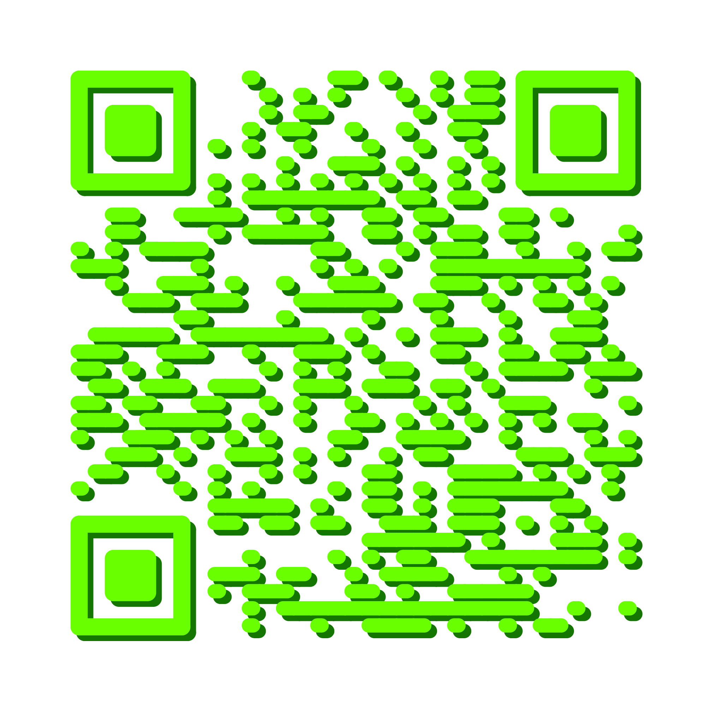

10. the sound of software tranquillity 5 ♬
Intro
At the end of the work day, a software researcher colleague was tasked with closing all of their open programs, letting the computer wind down. Once the software activity of the day had stopped, a program was run, recording the software activity of the kernel for one second. During this one second the human made no interaction with the computer.
The entire dataset was sonified repeatedly, resulting in the artistic research article the sound of software tranquillity published in Ruukku issue 15. Zooming in further and further, until every microsecond of the trace was audible as rhythm, one second of an idle computer turned into 47 hours of sound. Two days of constant listening, with long stretches of activity separated by seconds to minutes to hours of silence.
We present a few short excerpts from the heart of the computer. The entire recording is available at [DOI: 10.5281/zenodo.4153544].
Software object
Many things happen in the software heart of the computer, the kernel, and there are many ways to measure them. You could trace the communication between applications and the operating system (so called system calls) or measure the temperature of the components fluctuate with power use. This work uses the ftrace tool which, among other things, records function calls inside the Linux kernel. These function calls do not paint a complete picture of all that is happening inside the computer. Yet, since it is virtually impossible to obtain such an exhaustive observation of every aspect of the system at the same time, it serves as a good approximation.
Quote
”Clock signal is the mechanism that establishes the flow-of-time. Without it, the order for all events cannot be arranged and, consequently, no useful tasks can be performed.”
(Xiu, L. (2017), Clock technology: The next frontier p. 28)
11. Browser Chance Music v2 ♬
Browser Chance Music was a space for a radically different relationship between user and software. Evanescent and imperceptible internet activity emanating from a smartphone is revealed through immersive sounds and visuals.
Activating this audiovisual system with your own smartphone gives a sonic and visual presence to the evanescent and imperceptible internet activity that emanates from an object which is often quite personal, but largely unknown. Defamiliarizing the smartphone and revealing the aesthetics of its operation opens the doors to a new relationship with our constant companion.
This project was a collaboration between the re|thread collective and Henrik Frisk, professor of music at KMH, and funded by NAVET.
Software object
Internet activity happens through tiny packets of data sent between IP adresses. Nowadays, most of these packets are encrypted so that the owner and users of a WiFi network cannot read your communication. In this piece, attributes such as who owns the server being communicated with, where the server is located, how much data is being exchanged and how active the connection is are fused into an immersive sonic experience.
12. the sound of software tranquillity 6 ♬
See the sound of software tranquillity 5 above.
13. cyber|glow ♬
Intro
Even relatively simple software applications produce and rely on massive amounts of software activity.
The first part of cyber|glow is a multiplayer interactive game. The audience plays the game with their phone and learn about the history of the Résidence de France. While the audience plays, cyber|glow traces all the operations that make the game work: messages between the audience's phones and the game server, as well as all the digital activity inside the game.
The second part of cyber|glow's diptych is an audiovisual software art piece. The generative art piece is synthesized, in real-time, based on the software activity produced by the audience. Mesmerizing images and ambient electronic sounds reveal ultra-high frequency digital processes that run the game. This software art installation lets the audience make sense of digital activities through their emotions.
This instance of cyber|glow was presented at the Broms Palace, the residence of the French Ambassador to Sweden, and was part of the Kulturnatt Stockholm progamme for 2022. During the 6 hours of the palace being open to the public, around 900 people came to visit the installation.
Software object
- network messages between clients and server
- kernel activity
14. the sound of software tranquillity 7 ♬
See the sound of software tranquillity 5 above.
15. un|fold ♬
Intro
In 2020, the Nobel Prize in Chemistry was awarded to E. Charpentier and J. Doudna “for the development of a method for genome editing.” One way of explaining genome editing is to liken it to editing in a text document, specifically to “search and replace”, since the key to the CRISPR technology is the ability to identify and replace a part of the DNA. While the processes that enable the CRISPR search and replace action on genomes are extremely sophisticated, people draw parallels with text editing as a simple analogy in order to make the complex chemistry more accessible.
What, through design, may seem like a simple action, is often quite complex. Tracing a very simple text editor, we started the program, performed one copy paste action and then exited. The resulting recording of software activity contained hundreds of thousands of function calls from hundreds of different dependencies, likely written by hundreds if not thousands of developers. As part of the Nobel Week Lights festival in Stockholm 2022, this software trace was played back in an audiovisual light sculpture at the speed of 25 ms per function call. This is the sound part of the un|fold-ing of the software.
16. the sound of software tranquillity 8 ♬
See the sound of software tranquillity 5 above.